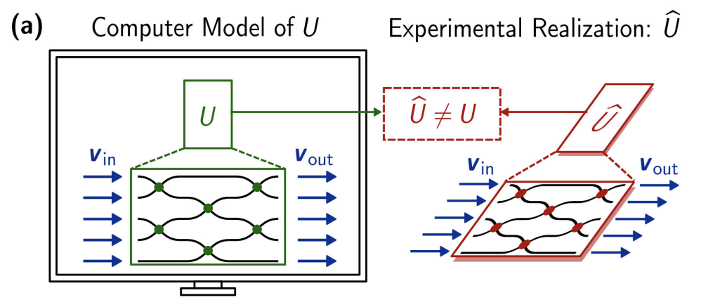

Revisiting the prospects of photonic computing in the AI era
PhD, Stanford University (2022)
Stanford Photonics Research Conference, September 14, 2026
slides: sunilkpai.github.io/sprc2026
The photonic mesh and its applications
Each box is a Mach–Zehnder interferometer: phase \(\phi\), a 50:50 coupler, phase \(\theta\), a second coupler. Sweep \(\theta\) and \(\phi\) and the light can be steered entirely into one port, which is how a mesh is programmed and how it is read out. A rectangular mesh of them implements any \(N\times N\) unitary.
- Universal linear optics
Reck 1994, Clements 2016 - Self-configuring optics
Miller 2013: mode sorting, unscrambling light, free-space links - Quantum photonics
Carolan 2015: reconfigurable interferometers for photons - Neural networks
Shen 2017: matrix multiplies for deep learning - Programmable photonics
Bogaerts 2020: an FPGA for light
The 2010s thesis: photonic compute for quantum and AI
- Linear optics, single photons, and detectors are universal (KLM 2001)
- Reprogrammable 6-mode universal interferometer on a chip (Carolan et al., Science 2015)
- Boson sampling, then fusion- and measurement-based architectures built from switches and interferometers
- Shen et al., Nat. Photonics 2017: coherent nanophotonic deep learning
- Premise: \(N^2\) multiply-accumulates per pass for \(O(N)\) conversions and no data movement
- Training energy doubling every few months; a digital MAC costs \(\approx100\,\mathrm{fJ}\)
Well over $1B of venture funding followed the AI thesis between 2017 and 2023.
The post-GPT thesis: photonic interconnects
- Transformer decode is memory-bandwidth bound: GPUs wait on HBM and on each other
- Models grew \(100\times\) or more, clusters \(10\times\), electrical I/O about \(2\times\)
- Co-packaged optics replaces pluggables: Nvidia photonic switches (2025), TSMC COUPE, Broadcom
- The AI datacenter adopted photonics for moving numbers, not multiplying them
- 2021: Passage interconnect announced beside Envise
- 2024: $400M Series D at $4.4B, for interconnect
- 2025: M1000 ships in March; Envise appears in Nature in April, as research
Optical neural network theory
Any weight matrix is two unitaries and a diagonal of attenuators, so two meshes per layer suffice. One MZI is a \(2\times2\) unitary \(T(\theta,\phi)\); \(N(N-1)/2\) of them in a grid reach all of \(\mathrm{U}(N)\) (Reck 1994; Clements 2016).
- Every term falls as \(1/N\): the mesh pays off only when it is wide
- Photons are cheap: \(10^5\) photons per 8-bit detection is well under \(1\,\mathrm{fJ}\) per MAC
- Conversions are not: a \(\mathrm{GS/s}\) 8-bit ADC costs picojoules, so \(N\) must reach the hundreds
- Footprint caps \(N\) near \(64\) to \(256\) per reticle, and error and loss compound over \(N\) stages
In situ backpropagation: the method

Three optical passes give the gradient of all \(N(N-1)\) phases of the device you actually have, with no model of its imperfections. Same adjoint as photonic inverse design (Hughes, Minkov, Fan 2018).
The experiment: a \(6\times6\) mesh, a camera, and an analog update

- A, B: 15 MZIs, TiN heaters, a \(3\%\) grating tap beside every shifter, \(6\times19\) spots imaged by an IR camera on an XY stage; fiber arrays on both sides for forward and backward light
- C to F: the analog update. Toggle the adjoint phase \(\zeta\) between \(0\) and \(\pi\); the AC component of the tap power is the gradient. Integrate it and write the voltage. No subtraction, no \(O(N^2)\) readback, error on par with the digital route and batchable by linearity


On-chip training, as it happened
Energy per operation: the 2023 model, Envise, and a 4-bit projection

At 4 bits the ADC and the light collapse and inference sits \(7\times\) under the 4-bit digital line. Training wins on batch integration: the gradient at each tap is integrated over the batch and read once, so the 12-bit ADC runs at \(f/M\) and averaging adds \(\sqrt{M}\) in SNR. At \(M=4096\) that is \(53\,\mathrm{fJ/op}\), 6 extra gradient bits, 8-bit light.
Rack design when the accelerator is \(100\,\mathrm{W}\), not \(1\,\mathrm{kW}\)
- Light, ADCs, TIAs, laser: \(\approx2\,\mathrm{W}\)
- Thermal phase shifters: \(16{,}384\times50\,\mathrm{mW}\approx800\,\mathrm{W}\). Segments must be EO or MEMS
- Digital shell: Envise measured \(19\,\mathrm{W}\) per core, \(25\times\) the optics. This sets the package power; HBM adds \(25\) to \(30\,\mathrm{W}\) per stack
- Capacity: gone. A \(50\) to \(100\,\mathrm{W}\) package is air-cooled
- Stability: stays. Si \(dn/dT\) gives \(0.07\,\mathrm{rad/K}\) per \(100\,\mu\mathrm{m}\), so sub-kelvin uniformity: TEC per die or a low-flow loop
- Lasers: one water-cooled shelf per rack, fibre to compute and CPO ports. The only liquid in the rack
| \(\mathrm{pJ/op}\), full system | ops per rack | vs NVL72 |
|---|---|---|
| \(1.2\) Envise measured | \(25\,\mathrm{POPS}\) | \(29\times\) less |
| \(0.30\) 8-bit digital model | \(100\,\mathrm{POPS}\) | \(7\times\) less |
| \(0.045\) 2023 model, 8-bit | \(670\,\mathrm{POPS}\) | parity, \(\tfrac14\) power |
| \(0.014\) 2023 model, 4-bit | \(2.1\,\mathrm{EOPS}\) | \(3\times\) more |
- Same throughput at a fifth of the power in any air-cooled hall, no CDU or manifolds; or \(1{,}200\) accelerators in the same \(120\,\mathrm{kW}\), a network problem before a thermal one
- The rack was dense because copper NVLink reaches \(1\) to \(2\,\mathrm{m}\). Photonic I/O removes the reason; photonic compute removes its cost
Area: one device per weight
| \(\mathrm{mm}^2\) per weight | TOPS per \(\mathrm{mm}^2\) | |
|---|---|---|
| 2023 chip MZI, \(625\,\mu\mathrm{m}\) long | \(0.08\) | – |
| compact MZI, EO or MEMS | \(0.01\) | – |
| Envise PTC, \(128^2\) in \(349\,\mathrm{mm}^2\) | \(0.021\) | \(0.05\) to \(0.19\) |
| B200 die, FP4 MAC + SRAM | \(\sim10^{-4}\) | \(\sim5.6\) |
- A 128-wide mesh of 2023 MZIs is \(80\times16\,\mathrm{mm}\): bigger than a reticle. Compact cells: \(250\,\mathrm{mm}^2\) for one layer
- Wavelength sets the floor at \(\sim10^{-3}\,\mathrm{mm}^2\) per \(2\times2\) cell; transistors keep shrinking. \(30\) to \(120\times\) less throughput per \(\mathrm{mm}^2\) than a GPU
- The stationary weight and the footprint are the same decision: no weight traffic, but a device per parameter
- Weights arrive as optical pulses and multiply the input at a homodyne detector: \(O(N)\) devices, \(N\) steps, zero silicon per parameter, parameters live in HBM
- MACs per device per step is the same as a mesh; the win is \(10\) to \(100\,\mathrm{GS/s}\) modulators and \(N\) devices instead of \(N^2\) per reticle
- The cost: every weight is fetched and modulated on every use. HBM at \(2\) to \(4\,\mathrm{pJ/bit}\) needs batch reuse \(\gtrsim300\) to get under \(50\,\mathrm{fJ/op}\). The footprint problem becomes the memory-bandwidth problem, the one GPUs already have
- Block-level: EO phase shifters (\(\mathrm{ns}\)), the \(N^2 b\) contact array run at speed (\(64^2\times8\) bits per \(100\,\mathrm{ns}\), \(330\,\mathrm{Gb/s}\)), a batch per block. Keeps \(O(N)\) conversions per block and in situ backprop
- Or a passive DFT (star coupler, \(0.1\,\mathrm{mm}^2\)) with \(N\) time-driven diagonal modulators: the smallest photonic MVM, but general matrices need \(\sim2N\) factors, so it pays only for structured layers
Scaling past one mesh: tiling
- A Llama-70B MLP up-projection is \(8192\times28672\): \(14{,}336\) tiles of \(128^2\). Each tile is an SVD, \(W_{ij}=V\Sigma U^{\dagger}\): two meshes and \(N\) attenuators, optical depth \(\approx4N\) per tile
- Conversions per MAC are unchanged: every tile still amortises \(N\) inputs and \(N\) outputs over \(N^2\) MACs. The partial-sum adds are \(O(N)\) per tile, digital, negligible
- Error does not compound across tiles. Loss, splitter error and phase noise accumulate over \(4N\) stages inside a tile and are reset at the ADC. A monolithic large mesh would compound over its full depth; tiling caps it
- Streaming: a tile reload is \(N^2 b\,E_{\mathrm{mod}}\approx130\,\mathrm{nJ}\) and an HBM fetch \(\approx0.4\,\mathrm{\mu J}\); amortised over \(M=10^4\) vectors that is \(\approx2.5\,\mathrm{fJ}\) per MAC. Same arithmetic-intensity rule as a GPU
- Input light must reach every row of tiles: fan out optically (\(d_{\mathrm{out}}/N\) way split, \(18\,\mathrm{dB}\) here) or re-encode per tile row (\(E_{\mathrm{mod}}\) per element per row). Either way it is the laser shelf's problem, not the mesh's
MLP versus attention: weight-stationary or not
| block | MACs | share at \(L=8\mathrm{k}\) | at \(128\mathrm{k}\) |
|---|---|---|---|
| MLP (two or three matrices) | \(8d^2\) | \(61\%\) | \(29\%\) |
| Q, K, V, O projections (GQA \(8/64\): \(2.25d^2\)) | \(4d^2\) | \(31\%\) | \(14\%\) |
| attention scores and value sum | \(\approx Ld\) | \(8\%\) | \(57\%\) |
- The weight matrices see every token: \(M\) per tile per step is \(10^4\) to \(10^5\) in training, \(10^3\) to \(10^5\) in prefill, the concurrent-request count in decode
- GQA and MQA shrink the KV cache and the K, V matrices, not the attention MACs. Windowed, sparse and linear attention do shrink them, and push the MLP share back toward \(60\%\)
- Amdahl: a free MLP buys at most \(2.6\times\) at \(8\mathrm{k}\) context, \(1.4\times\) at \(128\mathrm{k}\)
- \(QK^{T}\) and the \(V\) sum multiply two activations; nothing is stationary, so a mesh would be rewritten every token. A homodyne detector with both operands as pulse streams (Hamerly 2019, Opticore) has no state to rewrite
- Prefill and training reuse each key across the sequence, so that unit is compute-bound. Decode uses each key once per token and is KV-bandwidth-bound on any hardware
- So: mesh for the MLP and projections, temporal unit for attention, both for training and prefill. Decode stays a memory problem
What changed after 2022?
Revisit the four conditions: fan-in large (still hard), precision low (now true), weights static (true for inference), data already analog (not in a datacenter).
Questions?

✎ sunilkpai.github.io/blog
💼 linkedin.com/in/sunil-pai-96286539
🐦 @sunilkpai
🎓 Google Scholar: Sunil Pai
✉ sunilkpai93@gmail.com
Other applications: quantum and analog signal processing backup
- Meshes are the interferometers, switches, and multiplexers of linear-optical quantum computers (Carolan 2015; Xanadu and silicon platforms, Nature 2025)
- No DAC or ADC in the data path: photons in, detector clicks out
- Loss, extinction, and phase accuracy are what matter; accelerator calibration methods transfer directly
- Mode sorting and unscrambling for free-space and multimode links (Miller 2013; Annoni 2017)
- RF photonic filtering and beamforming, lidar wavefront control, optical switching
- The signal is already light: conversions only at the boundary, weights updated at kHz by feedback

In situ backpropagation and inverse design backup

- Adjoint method: a gradient is the interference of a forward and a backward field (Hughes, Minkov, Fan 2018)
- Forward input, backward error, then their sum: tap power at each phase shifter reads out \(\partial\mathcal{L}/\partial\theta\)
- 3-layer, 4-port silicon photonic network with thermal phase shifters and grating taps imaged by an IR camera
- Analog update: one toggle applies the gradient, with no digital subtraction and no \(O(N^2)\) readback
- Ring and moons trained on chip: \(90\) to \(98\%\) test accuracy, tracking digital training curves
- Simulated \(64\times64\) MNIST: \(97\%\) ideal, \(95\%\) with tap noise and I/O error
Why width is hard: light through a 128-mesh backup

- A random unitary is not a random set of phases: Haar-distributed meshes concentrate the MZIs near cross state toward the centre (top row)
- Initialise uniformly and light collapses onto a few paths (bottom row); the gradient landscape has the same structure
- Every error term in the energy equation compounds over the \(2N\) stages light crosses, so width buys efficiency and costs accuracy at the same rate
- This is why training a mesh needs the device in the loop: the parametrisation is far from the matrix it represents
Inference versus training: the energy budget backup
A 2025 photonic system sits about \(10\times\) above GPU peak, with \(98\%\) of its power in electronics. The optics are not the term to optimize.
- Tolerates \(4\) to \(8\) bits, the analog-friendly regime
- Weights static, so phase holding amortizes
- Cost is dominated by conversions, not photons
- Gradients want 16-bit dynamic range, analog's weak spot
- In situ backprop: the backward pass is one more optical pass, and the update is \(O(1)\) per phase instead of \(O(N^2)\) memory traffic
- But each step rewrites \(N^2\) phases, so weight write energy and speed set the budget